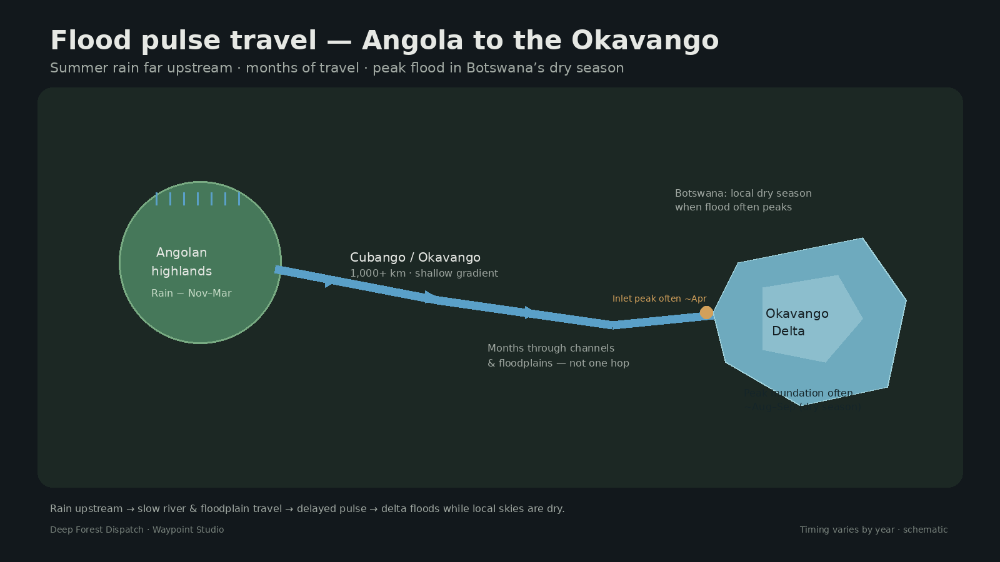
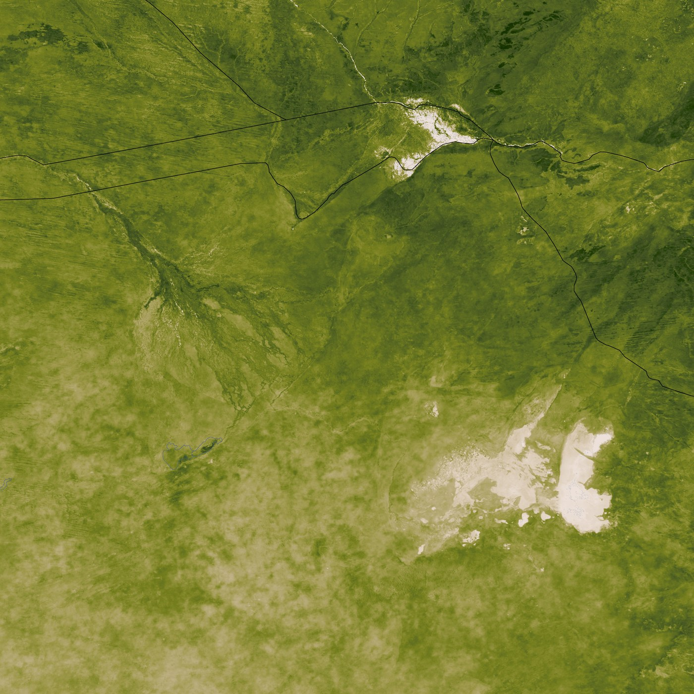
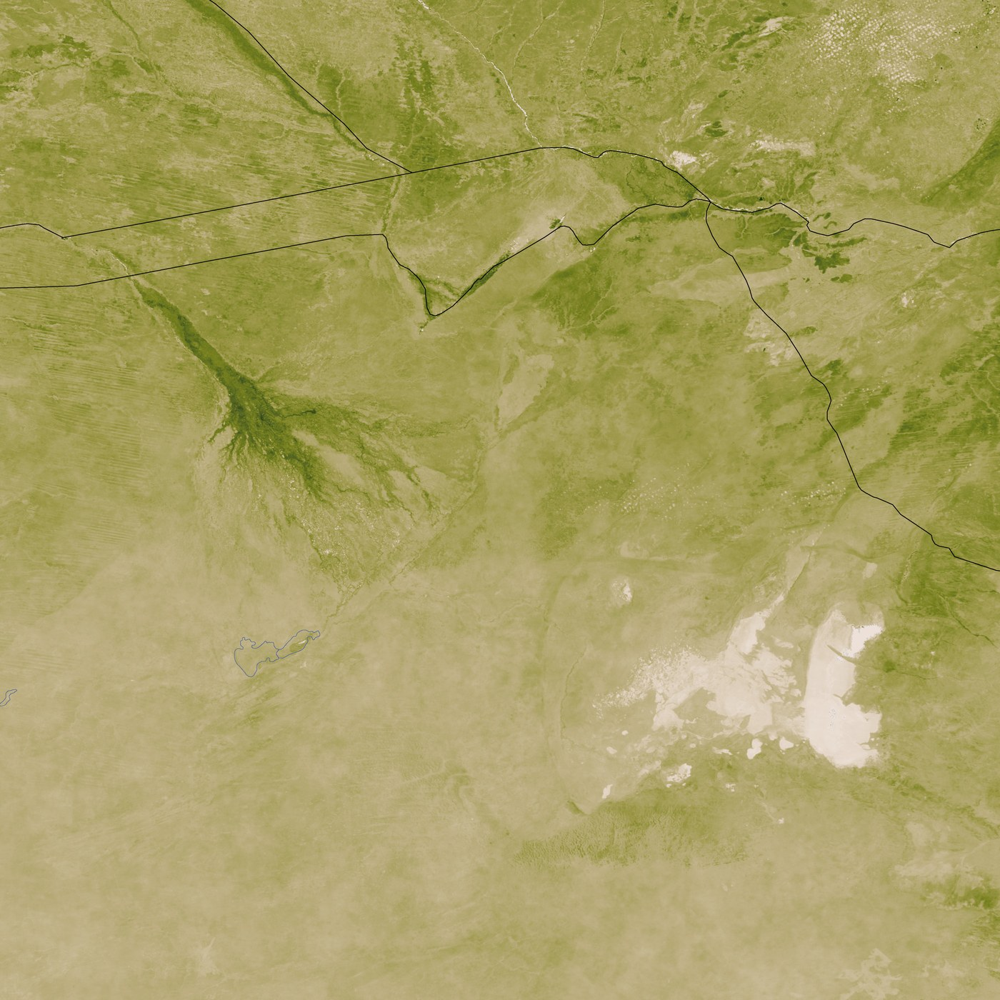

Wet when it should be dry
In northern Botswana’s dry season, the Okavango Delta can expand into a glittering maze of channels and floodplains. Around it, the Kalahari looks thirsty. The paradox is only a paradox if you assume the water fell here last week.
Most of the annual flood is a delayed pulse from summer rains in the Angolan highlands — water that has been traveling for months through the Cubango/Okavango system before it finishes spreading across this inland fan.

A river that never reaches the sea
The Okavango (Cubango in Angola) rises in sandy highland catchments, flows toward Namibia, and empties into northern Botswana as an endorheic alluvial fan — an inland delta. There is no ocean outlet. Water spreads, soaks, feeds wetland forests, and mostly leaves as vapor.
Astronaut photographs in sunglint make the advancing flood look like a bright vein. NASA Earth Observatory notes that only a small fraction of the river’s water typically exits the delta at all.
Why the calendar is out of phase
Highland rains are largely a southern-hemisphere summer story — commonly about November through March. The flood wave that reaches the delta inlet often builds later; analyses of a multi-decade hydrometric record show peak discharge at the inlet around April on average, with maximum inundated area often in August–September — deep into Botswana’s dry season.
That lag is not one trick. Distance from the headwaters matters. So does the shallow gradient: water moves slowly through channels and across floodplains, soaking into sands and lingering in vegetation. Part of the delay is upstream travel; part is slow expansion inside the delta itself.


Not a metronome
Some years the pulse arrives early or overspills into neighboring systems. Local rainfall can raise levels inside already wet areas, and rare very wet years can expand inundation with the rains. The durable story is still the delayed highland flood — not magic water, and not “no rain involved.”
Extent also varies: published ranges for seasonal expansion run from several thousand square kilometers at minimum to much larger maxima depending on the year. The fan rearranges; channels shift; the pulse is a system, not a faucet.